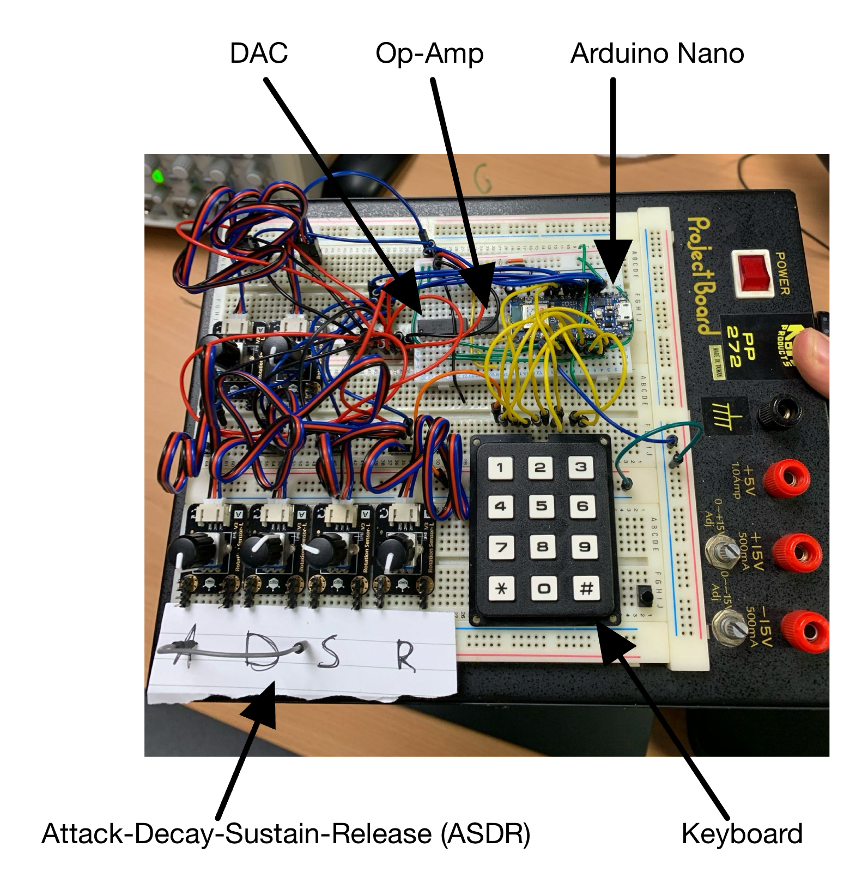
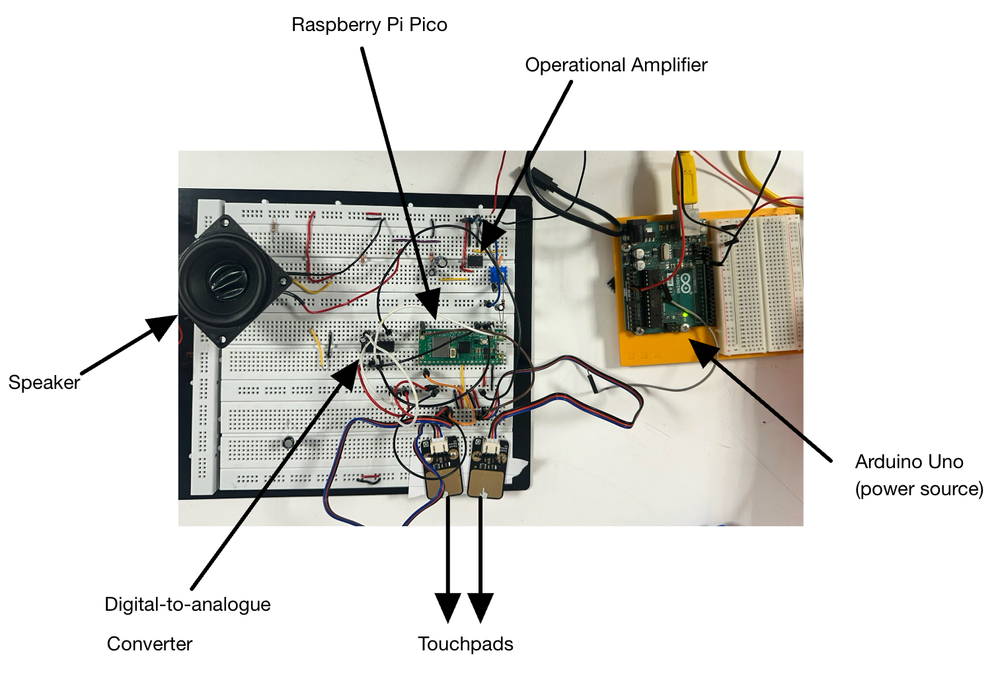

This DIY digital synthesizer and drum set project is perfect for any music enthusiast,
hacker, or programmers who are interested in digital signal processing (DSP), modern music production, electronics and programming.
Use an Arduino and Rasperry PI Pico (optional) to create your own DJ deck, complete with a synthesizer, effects (attack, delay, sustain, release)
, keyboard and drums. Develop some applied practical skills and add your own twists following along with this project!
"The most exciting phrase to hear in science, the one that heralds new discoveries, is not 'Eureka!' but 'That's funny...'" - Isaac Asimov
What you'll need:
Below is a table of the main parts you will need to create the basic elements of this project. Don't fret! If you do not have exactly resistors or capacitors, you can experiment with designing your own filters, etc.
Component
Quantity
Specifications
Purpose
Core Electronics
Arduino Nano 33 IOT
1
Or compatible microcontroller (Uno, etc.)
Main processor for the synthesizer
Raspberry PI Pico
1
Or compatible microcontroller
Main processor for drums and GUI
Breadboard
1
Full-size recommended, multiple may be helpful
For prototyping the circuit
Jumper Wires
20+
Various lengths, female connectors may be helpful
Connecting components
Keyboard/Input Components
Keypad
1
Alternatively use 8+ push buttons
Keyboard keys
Potentiometers
6
10kΩ linear
Parameter controls for keyboard (attack, sustain, release, etc.)
Pull-down Resistors
8+
10kΩ
For button debouncing (only necessary if you use push-buttons rathe than keypad)
The main goal of this project was to utilize an analogue
component with an embedded component to create a system that
functionally produces and processes audio signals for musical applications.
Our system integrates the envelope components of the synthesizer
with the touch pads of the drum set to create a model of a DJ set that
allows for real-time sound creation and manipulation. This project
demonstrates the use of practical applications in circuit design as well
as developing and processing audio signals for output, combining analog
signal conditioning with digital control systems.
Lesson 1: Play around with sound.
Originally we set out to make a vocoder for this project, but after much testing and consideration we decided to
pivot. Some of the elements we built however, remained useful. The first thing we built was an audio power amplifier,
so that we could experiment with playing different sounds through it, and how different filters would affect the audio.
You can try connecting the green wire to different types of input and playing with the volume controls.
LM386 IC: This integrated circuit amplifies the weak audio signal to a level that can drive a speaker.
500kΩ Potentiometer: This serves as our volume control, allowing us to adjust the amount of audio signal that reaches the amplifier. Turning this knob adjusts the amplitude of the output sound.
0.33μF Capacitor (Input): This capacitor blocks DC voltage while allowing AC audio signals to pass through, preventing DC offset from affecting the amplifier.
220μF Capacitor (Output): This large electrolytic capacitor couples the amplified audio signal to the speaker while blocking DC current.
8Ω Speaker: The final component in our chain converts the electrical signal from the amplifier into sound waves we can hear. The 8Ω impedance matches well with the LM386's output characteristics.
To experiment with the power amp, you can connect the input of the circuit to a PWM pin on an Arduino and use the "tone.h" library to play different frequencies.
Lesson 4: Create a GUI.
The graphical user interface (GUI) serves a few functions. Firstly, it displays the current properties set on the ADSR for tuning.
It also functions as an oscilloscope, and can display the wave that is being generated by the keyboard synthesizer.
By using the click functionality on the joystick, a user can select from a list of preprogrammed drum loops, which will start playing on the drum via the Pico!
Navigation through the GUI works with the flick of the joystick, by flicking left or right, you can cycle through the different screens.
By flicking up and down, you can cycle through the different preprogrammed drum loops and songs.
Arduino: The Arduino Uno controlls the GUI states, sends state updates to the Pico and refreshes the OLED display. This could be run on the same Arduino as the synthesizer or even on the Pico. We did experiment with running the GUI on the second core of the Pico, but because of a lack of analogue input GPIO pins, and no library support for the Adafruit OLED displays, this did not work. It would have been simple to also run the GUI on the Arduino Nano, where the synthesizer runs, however, again because of a limit on GPIO pins and clock constraints (the Nano was not fast enough to get sufficient wave resolution and run the GUI) this was abandoned. If we were to do this project again, we would use just one microcontroller with more computational power to run the synthesizer and the GUI.
Joystick: The joystick is used to navigate the GUI through three analogue inputs: displacement in x, displacement in y, and clicking of the joystick. In the code there are limits defined for what displacement of the joystick is considered a 'flick'. These flicks are used to navigate through the different menus and also between songs/drum loops within menus. When a user wants to select a song, they can click in on the joystick. This click is debounced, and depending on the state of the screen (which drum loop/song they were hovering over), the selected drum loop/song will be updated. Every time a selection is updated this is passed to the Pico.
Output wires: The white, orange, ochre, and purple wires in the schematic (connected to digital GPIO pins) are the functinonal connections to the Pico. They relay the update drum/song choice to the Pico. In our implementation, this works simply but outputting a 'high' to a wire corresponding to each possible drum selection. In the future, it would be better to serialize the selection.
OLED display: The OlED display runs on the Adafruit SSD1306 library over serial peripheral interface (SPI). There is great support of this screen on the Arduino, using the SPI library and the Adafruit screen library. Using the built in functions of these libraries, custom screens can be drawn and displayed on the screen based on state variables. This is the main premise of the code implementation, discussed below.
Arduino Code for GUIC++
At it's core the GUI is driven by one state variable: screen_state, which ranges from 1-5, and denotes the current screen that will be displayed: a main menu, synthesizer controls, oscilloscope, song selector, and drum selector. The chooseScreen() function continuously reads the joystick's X-axis: pushing right increments screen_state, pushing left decrements it, and it wraps around when it goes beyond either end. Each loop iteration then calls drawScreen(), which dispatches to the appropriate drawing function for the current mode.
For selecting and playing preprogrammed drum loops (screen_state == 5), the joystick's Y-axis moves a highlighted box through up to four entries ("Money beat", "Hip-Hop", "Funk", "None"), while a click of the joystick button(debounced) commits a choice into selected_song. The selected song is conveyed to the Pico, to play the drums.
Throughout the code, "dead-zone" thresholds prevent jitter when the joystick is centered, and brief delay(100) calls debounce menu transitions.
How Do The Components Work?
The DJ set consists of these components:
Keyboard Synthesizer featuring an ADSR (Attack, Decay, Sustain, Release)
envelope controller, a 12-key numeric keypad interface, operational amplifier
circuitry for signal conditioning, a Digital-to-Analog Converter (DAC) for
waveform generation, and an Arduino microcontroller for processing and control.

GUI features a real-time oscilloscope to vizualize the audio waveform, drum and
synthesizer screens, percentage bars for amplitude monitoring, and song screen
to view the selected song from a list of preloaded audio sounds
Drum Set including 4 touchpads to simulate snare, kick, hi-hat, and toms. It uses a Raspberry Pi Pico
as the core controller, interfaced with an op amp, a digital-to-analogue converter (DAC), and a speaker
to produce the drum sounds instantaneously.

Building the Hardware
Our DJ table consists of three main hardware components working together to
create a complete music production system. Below is a break down each component
with detailed information on how they were constructed and integrated.
The Drum Set
The drum machine component allows for creating rhythm patterns with bass, snare, and hi-hat sounds.
Drum Set Circuit Schematic
The Synthesizer
Our synthesizer features a complete ADSR (Attack, Decay, Sustain, Release) envelope controller for shaping sound characteristics.
Synthesizer Circuit Schematic
The GUI
The graphical user interface provides visual feedback and control over all aspects of the DJ table system.
GUI Connection Diagram
My Approach
To complete this project, I followed these steps:
Step 1: Research
I began by researching [topic] using resources from our school library and online sources. Some key resources included [mention books, websites, or articles].
Step 2: Planning
After gathering information, I created a plan for my project that included [describe your planning process].
Fig 1: My initial project plan showing [what the image shows]
Step 3: Execution
With my plan in place, I began working on [describe what you did]. This involved [specific tasks or techniques].
Results
After completing my project, I discovered [describe your findings or results]. The most interesting aspects were:
Fig 2: My final project showing [what the image shows]
I was particularly proud of [specific achievement or aspect of your project].
Challenges Faced
This project wasn't without its difficulties. Some challenges I encountered included:
Challenge 1: [Describe a challenge and how you overcame it]
Challenge 2: [Describe another challenge and how you overcame it]
Challenge 3: [Describe another challenge and how you overcame it]
Conclusion
Overall, this project taught me a lot about [topic]. I learned that [key insight 1] and discovered that [key insight 2]. If I were to do this project again, I would [what you would do differently].
I would like to thank [acknowledge anyone who helped you] for their support and guidance throughout this project.